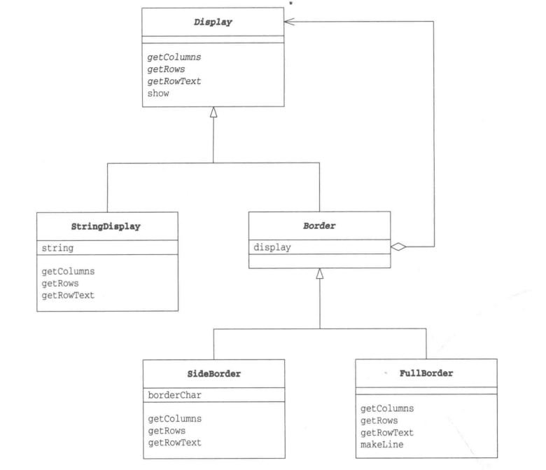
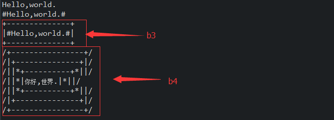

2018-1-3设计模式(三)————————Decorator模式学习笔记
结构
装饰者模式是指不断的往对象中添加装饰。比如如果一块蛋糕，加上奶油就是奶油蛋糕，加上草莓就是草莓蛋糕等等。

装饰者模式的关键点就在于总有一个不变的装饰物，以上是示例程序的类图:
Display类:用于拓展装饰物
StringDisplay类:具体装饰物实现
Border类:装饰框，依赖Display类，用于添加到装饰物中。
SideBorder类:具体的装饰框实现类，效果是"|装饰物|"
FullBorder类:具体的装饰框实现类,效果添加上下边框添加"+---------+"
代码实现
Display类
public abstract class Display {
public abstract int getColumns();//获取横向字符数
public abstract int getRows();//获取纵向字符数
public abstract String getRowText(int row);//获取第row行的字符串
public final void show(){
for(int i=0;i<(getRows());i++){
System.out.println(getRowText(i));
}
}
}
StringDisplay类
public class StringDisplay extends Display{//用于显示单个字符串
private String string;//要显示的字符串
public StringDisplay(String string){//通过参数传入要显示的字符串
this.string = string;
}
@Override
public int getColumns() {
return string.getBytes().length;//字符数
}
@Override
public int getRows() {
return 1;//行数是1
}
@Override
public String getRowText(int row) {//只有当row为0时，返回值
if(row ==0)
return string;
else
return null;
}
}
Border类
public abstract class Border extends Display{
protected Display display;//表示被装饰物
protected Border(Display display) {
this.display = display;//在生成实例时通过参数指定被装饰物
}
}
SideBorder类
public class SideBorder extends Border{
private char borderChar;//表示装饰边框的字符
public SideBorder(Display display,char ch){
//通过构造函数指定Display和装饰边框字符
super(display);
this.borderChar = ch;
}
@Override
public int getColumns() {//字符数为字符串字符加上俩侧边框字符数
return 1 + display.getColumns() + 1;
}
@Override
public int getRows() {//行数 即被装饰物的行数
return display.getRows();
}
@Override
public String getRowText(int row) {//指定的那一行的字符数为被装饰物的字符串
return borderChar + display.getRowText(row) + borderChar;//加上俩侧的边框的字符
}
}
FullBorder类
public class FullBorder extends Border{
public FullBorder(Display display){
super(display);
}
@Override
public int getColumns() {//字符数为被装饰物的字符数加上俩侧边框字符数
return 1 + display.getColumns() + 1;
}
@Override
public int getRows() {//行数为被装饰物的行数加上上下边框的行数
return 1 + display.getRows() + 1;
}
@Override
public String getRowText(int row) {//指定的那一行字符数
if(row == 0){//下边框
return "+" + makeLine('-',display.getColumns()) + "+";
}else if(row == display.getRows() +1){//上边框
return "+" + makeLine('-',display.getColumns()) + "+";
}else{//其他边框
return "|" + display.getRowText(row-1) +"|";
}
}
private String makeLine(char ch,int count){//生成一个重复总行数的次字符ch的字符串
StringBuffer buf = new StringBuffer();
for(int i=0;i<(count);i++){
buf.append(ch);
}
return buf.toString();
}
}
Main类
public class Main {
public static void main(String[] args) {
Display b1 = new StringDisplay("Hello,world.");
Display b2 = new SideBorder(b1,'#');
Display b3 = new FullBorder(b2);
b1.show();
b2.show();
b3.show();
Display b4 = new SideBorder(
new FullBorder(
new FullBorder(
new SideBorder(
new FullBorder(
new StringDisplay("你好,世界.")), '*'))), '/');
b4.show();
}
}
运行结果

注:装饰者模式相当于是在一个方法的参数通过匿名对象类的方式一层层的嵌套出来。
关键字词：设计模式、Decorator、装饰